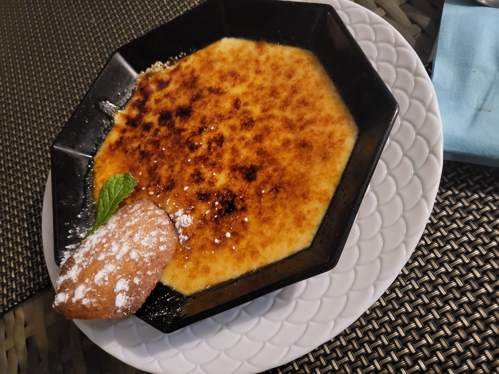

<html lang="en"></html>
  <head>
    <link rel="stylesheet" href="style.css" />
    <title>Taniti Eats</title>
  </head>
  <body>
    <header>
      <div class="header"></div>
      <div class="navigation">
        <nav>
          <ul>
            <li><a href="index.html">Home</a></li>
            <li><a href="visitUs.html">Visit Us</a></li>
            <li><a href="exploreCity.html">Taniti City</a></li>
            <li><a href="getOutside.html">Get Outside</a></li>
            <li><a href="food.html">Good Eats</a></li>
            <li><a href="faq.html">FAQs</a></li>
          </ul>
        </nav>
      </div>
    </header>
    <br /><br /><br />
    <div class="foodBanner">Taste the Adventure</div>
    <div class="foodBannerWide">
      
      <div class="citation">Photo by Celina Reeb, taken in 2022. Mo'Orea.</div>
      <div class="foodBlurb">
        <div class="category">
          <h4>Island Catch with Coconut Rice</h4>
          <ul>
            <li>Local Ahi and Poi</li>
            <li>Poi & Poke</li>
            <li>Coconut Tide</li>
            <li>Hikianalia Grill</li>
          </ul>
        </div>
        <br />
        <div class="category">
          <h4>Tropical Taste of America</h4>
          <ul>
            <li>Aloha American Grill</li>
            <li>Pacific Coast Cuisine</li>
            <li>Tropical Home Kitchen</li>
          </ul>
        </div>
        <br />
        <div class="category">
          <h4>Island Soy Joy</h4>
          <ul>
            <li>Aloha Tofu Delight</li>
            <li>Tropical Soy Treats</li>
            <li>Palm Bite Bistro</li>
          </ul>
        </div>
      </div>
    </div>
    <div class="foodBannerWide">
      
      <div class="citation">Photo by Celina Reeb, taken in 2022. Mo'Orea.</div>
      <div class="foodBlurb">
        <p>
            Experience the vibrant culture of the island by visiting the Aloha Harvest Market. 
            This bustling marketplace offers an array of fresh, locally sourced produce and handcrafted goods, 
            providing an authentic taste of island life. Additionally, don't miss the Luau Night Market, 
            where you can immerse yourself in traditional music, dance, and cuisine under the stars. 
            Both markets showcase the rich heritage and community spirit that make the island unique. 
            Be sure to include these destinations in your itinerary for an unforgettable experience.
        </p>
      </div>
    </div>
  </body>
</html>